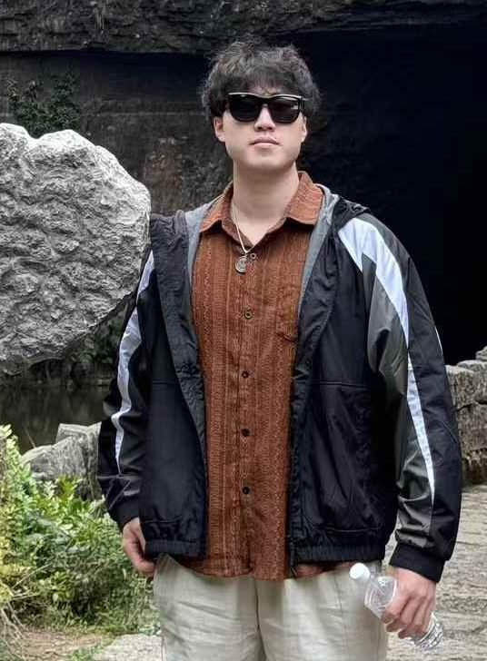

Yang Gao (高扬)Deep Learning Research Engineer
Pre-training Team, InternLM Group |
 |
I am currently a Research Engineer at the pre-training team of InternLM (书生-浦语) in Shanghai AI Laboratory. Previously, I received Master (2022) and Bachelor (2019) degrees in School of Computer Science and Technology from Northwestern Polytechnial University (NWPU), advised by Prof. Peng Wang.
Currently, My research interests focus on:
InternLM-XComposer-2.5: A Versatile Large Vision Language Model Supporting Long-Contextual Input and Output
Pan Zhang, Xiaoyi Dong, Yuhang Zang, Yuhang Cao, Rui Qian, Lin Chen, Qipeng Guo, Haodong Duan, Bin Wang, Linke Ouyang, Songyang Zhang, Wenwei Zhang, Yining Li, Yang Gao, Peng Sun, Xinyue Zhang, Wei Li, Jingwen Li, Wenhai Wang, Hang Yan, Conghui He, Xingcheng Zhang, Kai Chen, Jifeng Dai, Yu Qiao, Dahua Lin, Jiaqi Wang
[paper]
[code]
[huggingface]
Lins: Reducing Communication Overhead of ZeRO for Efficient LLM Training
Qiaoling Chen, Qinghao Hu, Guoteng Wang, Yingtong Xiong, Ting Huang, Xun Chen, Yang Gao, Hang Yan, Yonggang Wen, Tianwei Zhang, Peng Sun
IWQoS 2024.
[paper]
InternLM-XComposer2-4KHD: A Pioneering Large Vision-Language Model Handling Resolutions from 336 Pixels to 4K HD
Xiaoyi Dong, Pan Zhang, Yuhang Zang, Yuhang Cao, Bin Wang, Linke Ouyang, Songyang Zhang, Haodong Duan, Wenwei Zhang, Yining Li, Hang Yan, Yang Gao, Zhe Chen, Xinyue Zhang, Wei Li, Jingwen Li, Wenhai Wang, Kai Chen, Conghui He, Xingcheng Zhang, Jifeng Dai, Yu Qiao, Dahua Lin, Jiaqi Wang
NeurIPS 2024.
[paper]
[code]
[huggingface]
InternLM2 Technical Report
Zheng Cai, Maosong Cao, Haojiong Chen, Kai Chen, Keyu Chen, Xin Chen, Xun Chen, Zehui Chen, Zhi Chen, Pei Chu, Xiaoyi Dong, Haodong Duan, Qi Fan, Zhaoye Fei, Yang Gao, Jiaye Ge, Chenya Gu, Yuzhe Gu, Tao Gui, Aijia Guo, Qipeng Guo, Conghui He, Yingfan Hu, Ting Huang, Tao Jiang, Penglong Jiao, Zhenjiang Jin, Zhikai Lei, Jiaxing Li, Jingwen Li, Linyang Li, Shuaibin Li, Wei Li, Yining Li, Hongwei Liu, Jiangning Liu, Jiawei Hong, Kaiwen Liu, Kuikun Liu, Xiaoran Liu, Chengqi Lv, Haijun Lv, Kai Lv, Li Ma, Runyuan Ma, Zerun Ma, Wenchang Ning, Linke Ouyang, Jiantao Qiu, Yuan Qu, Fukai Shang, Yunfan Shao, Demin Song, Zifan Song, Zhihao Sui, Peng Sun, Yu Sun, Huanze Tang, Bin Wang, Guoteng Wang, Jiaqi Wang, Jiayu Wang, Rui Wang, Yudong Wang, Ziyi Wang, Xingjian Wei, Qizhen Weng, Fan Wu, Yingtong Xiong, Chao Xu, Ruiliang Xu, Hang Yan, Yirong Yan, Xiaogui Yang, Haochen Ye, Huaiyuan Ying, Jia Yu, Jing Yu, Yuhang Zang, Chuyu Zhang, Li Zhang, Pan Zhang, Peng Zhang, Ruijie Zhang, Shuo Zhang, Songyang Zhang, Wenjian Zhang, Wenwei Zhang, Xingcheng Zhang, Xinyue Zhang, Hui Zhao, Qian Zhao, Xiaomeng Zhao, Fengzhe Zhou, Zaida Zhou, Jingming Zhuo, Yicheng Zou, Xipeng Qiu, Yu Qiao, Dahua Lin
[paper]
[code]
[huggingface]
Internlm: A multilingual language model with progressively enhanced capabilities
InternLM Team
[paper]
[code]
[huggingface]
NAS-FCOS: Fast neural architecture search for object detection
*Ning Wang, *Yang Gao, *Hao Chen, Peng Wang, Zhi Tian, Chunhua Shen, Yanning Zhang
CVPR 2020.
[paper]
[code]